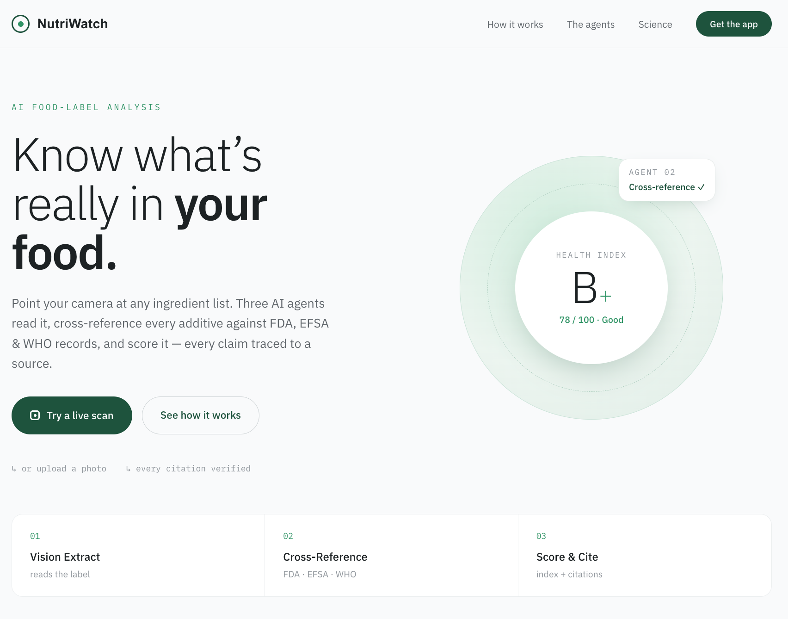
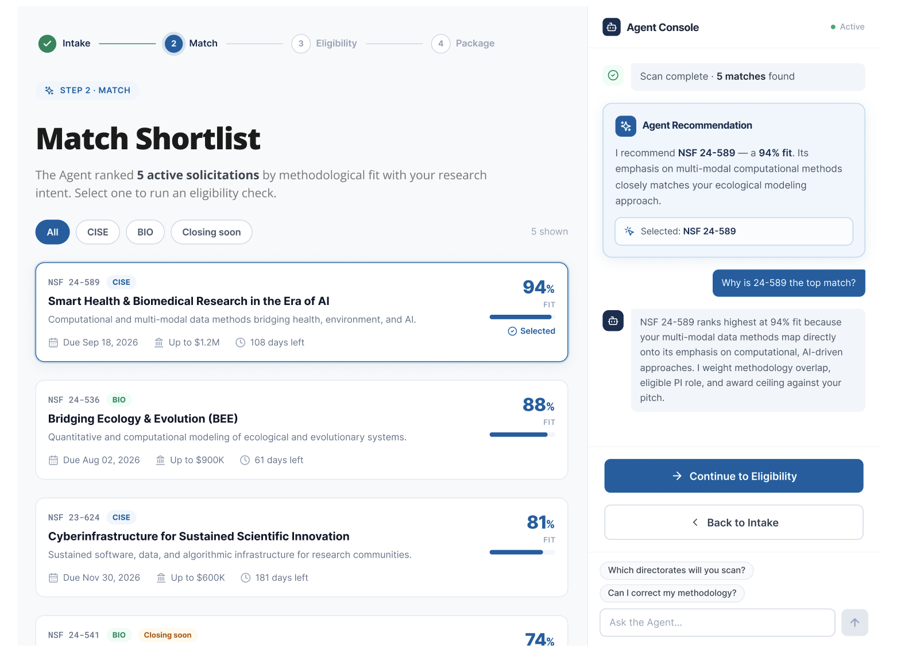
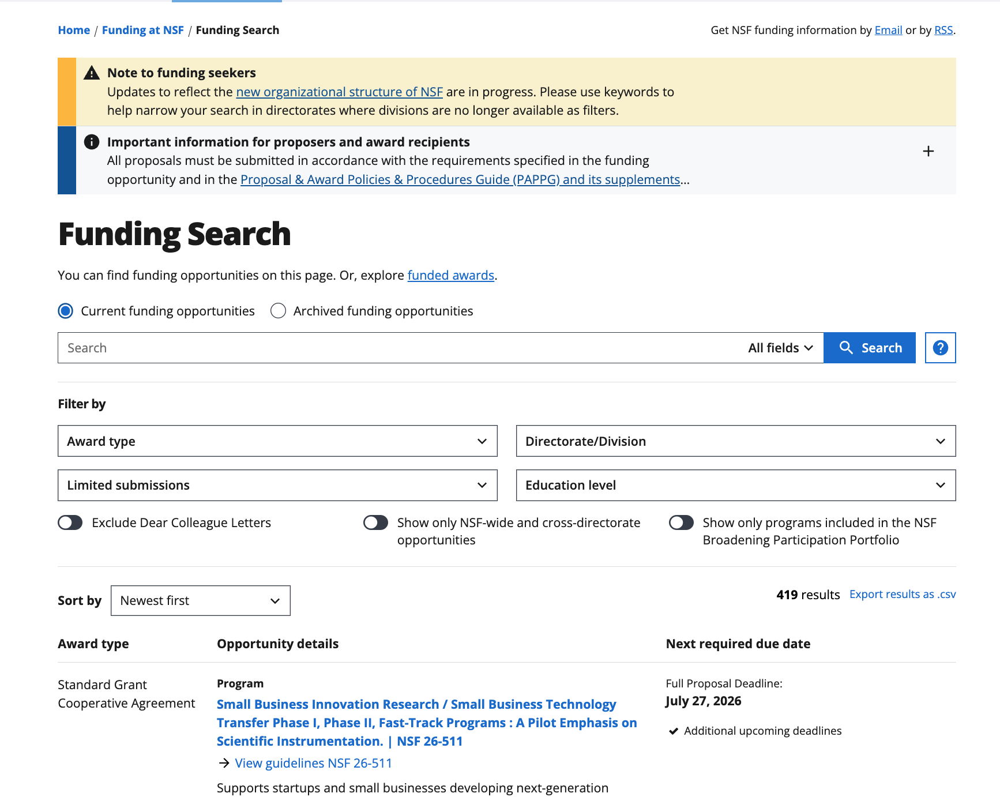

ROLE
Product Designer, 8+ yrs
Open to new roles
2026
A Product Designer shaping large-scale
platforms with a deep practice in design systems,
AI-powered experiences, and complex workflows.
Orchestrated a multi-agent AI system that translates dense food labels into verifiable, evidence-based health insights in seconds.

Designed an AI-powered research assistant that automates complex funding workflows, aligning institutional needs with precision data.

Modernized a massive legacy government ecosystem into an intuitive, highly structured search experience for millions of researchers.

01